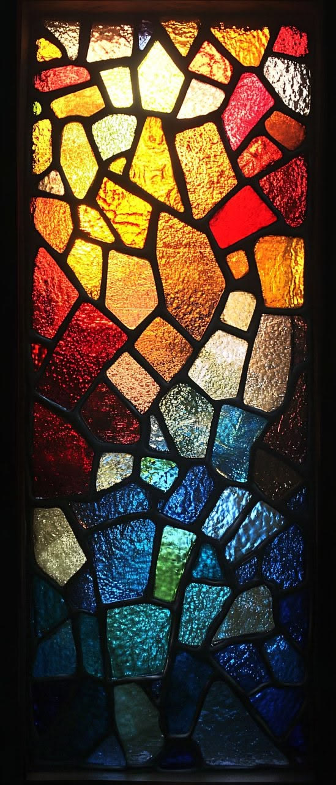
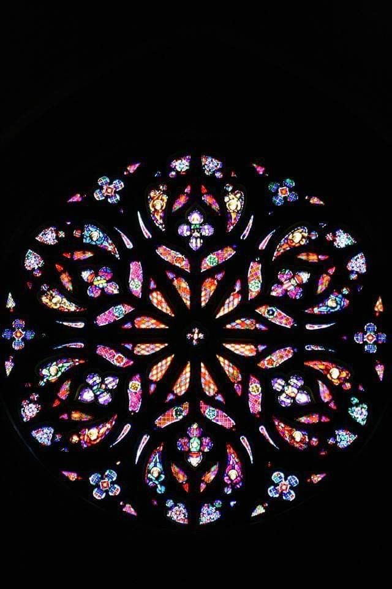
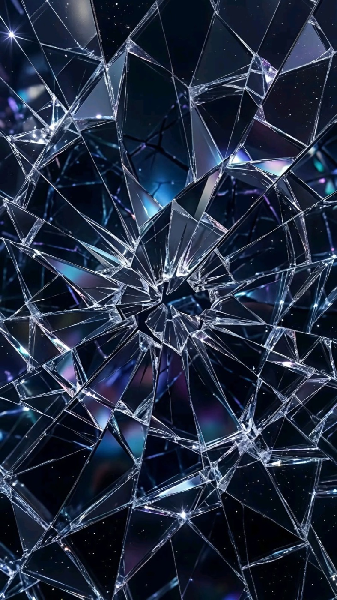
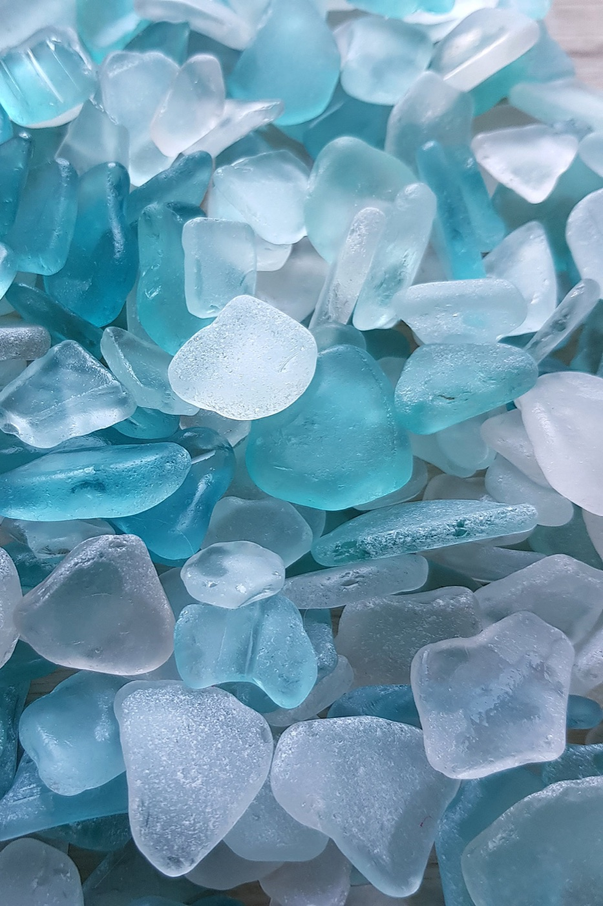
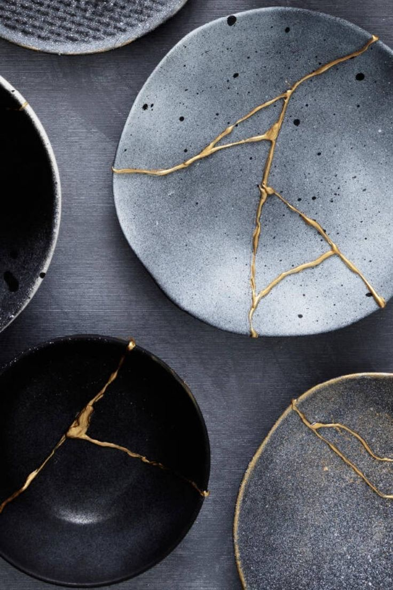
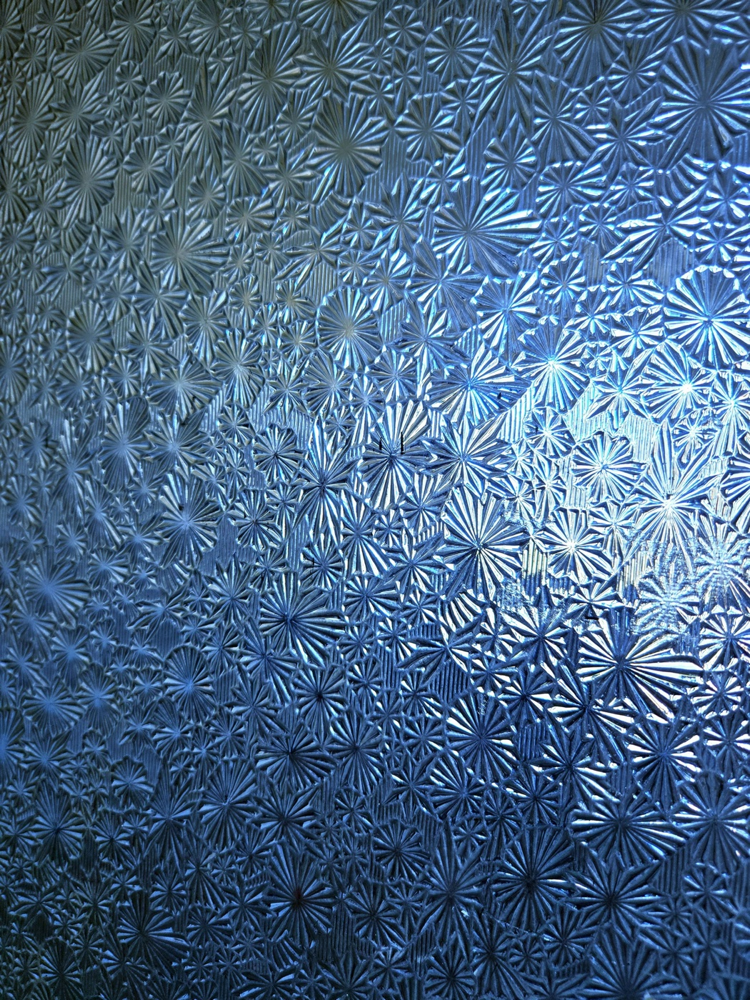
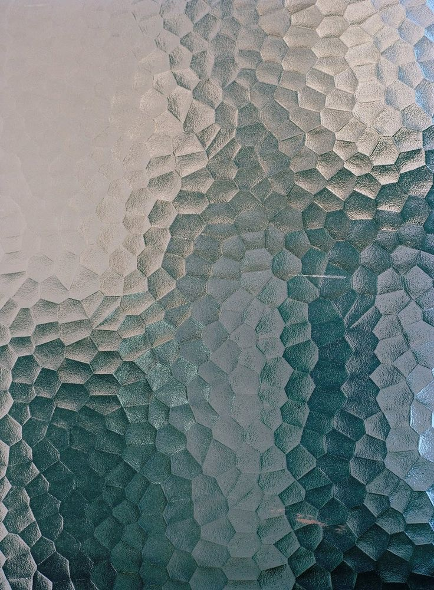
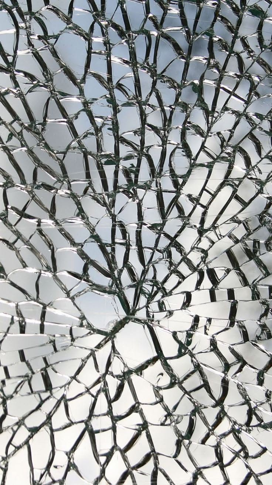

01Moodboard 與創作想法
為什麼要做這個
玻璃是一種很矛盾的材料。它很硬，卻一敲就碎；它把裡面和外面隔開，卻又讓光穿過來。 我想做一扇會「聽」的窗：安靜的時候，玻璃自己慢慢長出來、互相合併；聲音一來，它就裂開、掉落。 碎掉的地方不會一直空著，新的玻璃會再長回來，像記憶被打散之後，又用別的樣子拼回去。
從哪裡取材
- 教堂的彩繪玻璃窗：碎片緊緊拼在一起，中間是深色的鉛條，光從後面透過來。
- 海玻璃：海邊被浪磨過的玻璃碎片，霧霧的藍綠色，色票就是從這裡來的。
- 玫瑰窗：一圈一圈往外長的結構，是一開始的構圖起點。
- 金繼：日本修補陶瓷的方法，在裂縫上描金，讓破過的地方變成紋路。
收集的靈感

來源：Pinterest（原圖：123FreeVectors）

來源：Pinterest

來源：Pinterest

來源：Pinterest（原圖：japanseaglass.com）

來源：Pinterest

來源：Pinterest

來源：Pinterest

來源：Pinterest
搜尋關鍵字：rose window、sea glass、kintsugi、crackle glaze、seeded glass、cracked glass macro、shattering glass high speed
選出來的視覺方向
我先把所有可能的方向攤開，再用卡片複選，每一組憑直覺挑：
不規則多邊形大片加碎屑
海玻璃單色漸層
透明清玻璃有氣泡冰裂紋
粗糙不規則的邊重疊處混色旋轉時閃爍
萬花筒玫瑰窗往下掉
落地彈跳金線修復循環
深色加殘影記憶碎片
色票
海玻璃色票來自 TOHOBEADS COLOR STORY PALETTE（關鍵字 Glass sea）。每個顏色都往黑色和白色各延伸一段，玻璃的暗面和透光面就從這條漸層裡挑。後來又加了一組彩色玻璃色票，兩組可以在作品裡切換。
02實驗與每個版本
每走一步就存一個版本、錄一段。很多版本是失敗的，但每一次失敗都讓我更清楚自己要的是什麼。
v0 起點
細胞（換題）
- 做了什麼
- 原本想延續作品一的細胞：麥克風音量讓細胞撐大，太大聲就分裂成兩顆。
- 結果
- 細胞比較適合作品一。作品四想要一個跟聲音關係更直接的概念，所以換成玻璃。
v1
一圈碎片
for 加 rotate 繞成一圈，每片的四個角在各自的角落隨機。- 看起來
- 像一圈磁磚。拿掉
noLoop()之後，每一格都重抽random，碎片一直抖、越疊越亮。 - 學到
random每一格都會變；要固定形狀，得用randomSeed或把形狀存起來。
v2
四圈漸層，換上海玻璃色
for：外層決定第幾圈，內層畫這一圈的每一片。黑底、拿掉邊框。- 我的感覺
一點都不像玻璃。
- 接著
- 試了細長的三角形往外射，結果像海膽。後來找到一張彩繪玻璃的照片，才確定要的是碎片緊緊拼在一起的花窗，也決定先放掉一圈一圈的構圖。
v3
不規則的花窗
quad。黑色的粗邊就是鉛條。- 我的感覺
比剛剛好看，但沒有光影的透光跟互動感，看起來還太制式。
v4
玻璃在呼吸
noise 加上 frameCount，讓每個角慢慢飄動。- 我的感覺
比較接近我喜歡的效果，但不規則形變成正方形了。
- 修正
noise的值大多在 0.5 附近，角幾乎沒被推開。改成random決定每個角的個性，noise只負責在那個位置附近呼吸。
v5
反光線和氣泡
noise 隨機出現，每片加一道反光線和幾顆小亮點。- 我的感覺
不像，看起來比較像塑膠，長得很好笑。
- 接著
- 先把兩種透光做法畫出來比較，再決定要不要改程式。選了「每片往中心縮小、一層比一層亮」的做法。
v6 最喜歡的版本
增生、合併、碎裂
- 改了什麼
-
玻璃不再是固定的格子，而是會長大、和隔壁合併成一片、過一陣子再分開。
碎片不用羽毛那種慢慢飄，改成直接砸下去，落地小彈一下。
顏色在色票的漸層裡隨機，兩組色票都留著，可以切換。
碎過的地方留一圈金線，像疤痕。 - 聲音
- 改用課堂的 oav-p5：
micLevel控制干擾程度，kickIsDetected讓重拍打碎一大片。
03最終版本
在 OpenProcessing 開啟點一下畫面，允許麥克風，然後說話、拍手或放音樂。左邊的 OPC 面板可以切換色票、調亮度和碎裂門檻。
10 張靜態圖
技術筆記
| 想做到的事 | 用了什麼 |
|---|---|
| 碎片拼成花窗 | 交叉點陣列，相鄰四點畫一片 |
| 形狀不規則又會呼吸 | random 決定個性，noise 加 frameCount 負責飄動 |
| 透光 | 同一片往中心縮小疊 5 層，blendMode(ADD) |
| 聽聲音 | oav-p5 的 micLevel、kickIsDetected |
| 碎裂與墜落 | 從一點把玻璃切成三角形，每片是一個物件，有自己的速度和旋轉 |
| 控制面板 | OPC 的 OPC.palette、OPC.slider、OPC.toggle |